Overview
This vignette covers the exploratory data analysis (EDA) layer. It sits between the two other pipelines: it is run on data that has already been through Preprocessing, and it is what a stewardship team typically reviews before committing to DALY burden estimation. It does not transform data (like Pipeline 1) or estimate burden (like Pipeline 3) – it only visualises what is already there, to catch data-quality problems and characterise the cohort before further modelling.
All functions in this layer are named plot_* (with the
shared styling helper eda_theme()), which is deliberately
distinct from the prep_* (Pipeline 1) and
daly_* (Pipeline 3) naming used elsewhere in the
package.
Most plot_* functions here share a common
mode argument:
-
"faceted"– one panel per centre (the default for most functions) -
"overall"– all centres pooled into a single chart -
"single"– one specific centre, passed viacenter = "..."
and a common syndrome_col/syndrome_name
pair for restricting the plot to one infectious syndrome
(e.g. syndrome_name = "BSI") when that column is
available.
Connecting from Pipeline 1
The plot_* functions’ default column names
(organism_name, antibiotic_value,
PatientInformation_id, …) are convenience defaults for
raw-ish data – they do not automatically match the
standardised column names Preprocessing actually produces.
When passing real preprocessed output into these functions, map the
arguments to Pipeline 1’s real output columns explicitly:
| EDA argument | Pipeline 1’s actual output column |
|---|---|
patient_col |
patient_id |
organism_col |
organism_normalized (from
prep_standardize_organisms()) |
antibiotic_col |
antibiotic_normalized (from
prep_standardize_antibiotics()) |
value_col |
ast_value_harmonized (from
prep_harmonize_ast()) |
sample_col |
specimen_normalized (from
prep_standardize_specimens()) |
agebin_col |
Age_bin (from prep_assign_age_bins()) |
age_col |
Age (from prep_fill_age()) |
admission_col |
date_of_admission |
culture_col |
date_of_culture |
discharge_col |
date_of_final_outcome |
center_col |
center_name (a user-supplied raw column – Pipeline 1
does not invent hospital identity, it just carries it through) |
outcome_col |
final_outcome (the raw outcome text persists unchanged;
prep_standardize_final_outcome() adds a separate
outcome_std column alongside it rather than replacing
it) |
Every example below uses these Pipeline-1-aligned names, with the arguments passed explicitly rather than relying on defaults.
A Small Synthetic Dataset
The examples below use a small synthetic long-format dataset (one row
per isolate x antibiotic) with the same column names Pipeline 1 would
hand off – as if it were the output of the Preprocessing vignette’s
prepped object, scaled up to two hospitals so the
mode = "faceted" examples have something to facet over.
set.seed(42)
n_pts <- 60
centers <- c("General Hospital", "City Medical Center")
organisms <- c("Escherichia coli", "Klebsiella pneumoniae",
"Staphylococcus aureus", "Pseudomonas aeruginosa")
antibiotics <- c("Amikacin", "Ciprofloxacin", "Meropenem", "Ceftriaxone")
eda_data <- data.frame(
patient_id = paste0("pt_", sprintf("%03d", rep(1:n_pts, each = 3))),
center_name = rep(sample(centers, n_pts, replace = TRUE), each = 3),
organism_normalized = rep(sample(organisms, n_pts, replace = TRUE), each = 3),
antibiotic_normalized = rep(antibiotics, length.out = n_pts * 3),
ast_value_harmonized = sample(c("R", "S"), n_pts * 3, replace = TRUE, prob = c(0.4, 0.6)),
specimen_normalized = rep(sample(c("Blood", "Urine", "Sputum"), n_pts, replace = TRUE), each = 3),
final_outcome = rep(sample(c("Death", "Discharged", "LAMA", "Transferred to other hospital"),
n_pts, replace = TRUE, prob = c(0.15, 0.65, 0.1, 0.1)), each = 3),
date_of_final_outcome = rep(as.Date("2024-01-01") + sample(1:300, n_pts, replace = TRUE), each = 3),
is_polymicrobial = rep(sample(c(0, 1), n_pts, replace = TRUE, prob = c(0.75, 0.25)), each = 3),
date_of_admission = rep(as.Date("2024-01-01") + sample(1:300, n_pts, replace = TRUE), each = 3),
location = rep(sample(c("ICU", "Ward"), n_pts, replace = TRUE), each = 3),
infection_type = rep(sample(c("HAI", "CAI"), n_pts, replace = TRUE), each = 3),
Age_bin = rep(sample(c("<1", "1-5", "18-45", "45-65", "65+"), n_pts, replace = TRUE), each = 3),
Age = rep(sample(0:85, n_pts, replace = TRUE), each = 3),
infectious_syndrome = rep(sample(c("BSI", "UTI", "RTI"), n_pts, replace = TRUE), each = 3),
stringsAsFactors = FALSE
)
eda_data$date_of_culture <- eda_data$date_of_admission + sample(0:5, nrow(eda_data), replace = TRUE)
nrow(eda_data)
#> [1] 180Theme
eda_theme() is the shared visual style behind every plot
in this vignette – based on ggpubr::theme_pubr() when
ggpubr is installed, falling back to
ggplot2::theme_bw() otherwise. You do not normally call it
directly; it is applied internally by every plot_*
function.
eda_theme(base_size = 14)Organism and Susceptibility Overview
Top organisms
plot_top_organisms(
eda_data, n = 3, mode = "faceted",
patient_col = "patient_id", organism_col = "organism_normalized", center_col = "center_name"
)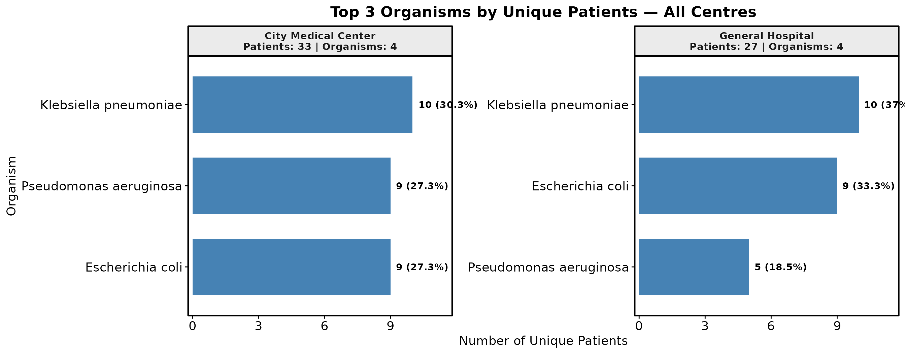
Pool across all centres with mode = "overall", or
restrict to one centre with
mode = "single", center = "General Hospital".
Susceptibility pattern (stacked R/S bars)
plot_abx_susceptibility() applies a
worst-phenotype rule: if a patient has multiple records
for the same organism-antibiotic combination, a single R result marks
the whole episode as R, so repeat cultures from one infection episode
are not double-counted.
plot_abx_susceptibility(
eda_data, n = 3, mode = "overall",
patient_col = "patient_id", antibiotic_col = "antibiotic_normalized",
value_col = "ast_value_harmonized", organism_col = "organism_normalized",
center_col = "center_name"
)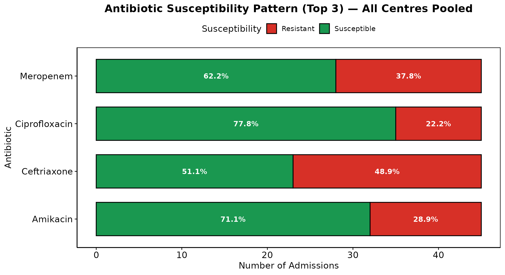
Resistance heatmap
plot_abx_heatmap(
eda_data, mode = "all",
patient_col = "patient_id", antibiotic_col = "antibiotic_normalized",
value_col = "ast_value_harmonized", organism_col = "organism_normalized",
center_col = "center_name"
)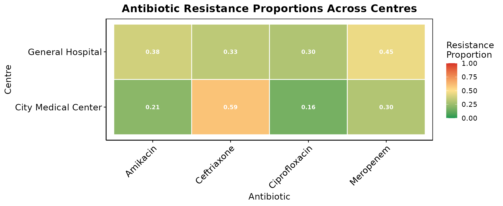
Resistance by specimen type
plot_resistance_by_sample(
eda_data, n = 3, mode = "overall",
patient_col = "patient_id", sample_col = "specimen_normalized",
organism_col = "organism_normalized", antibiotic_col = "antibiotic_normalized",
value_col = "ast_value_harmonized", center_col = "center_name"
)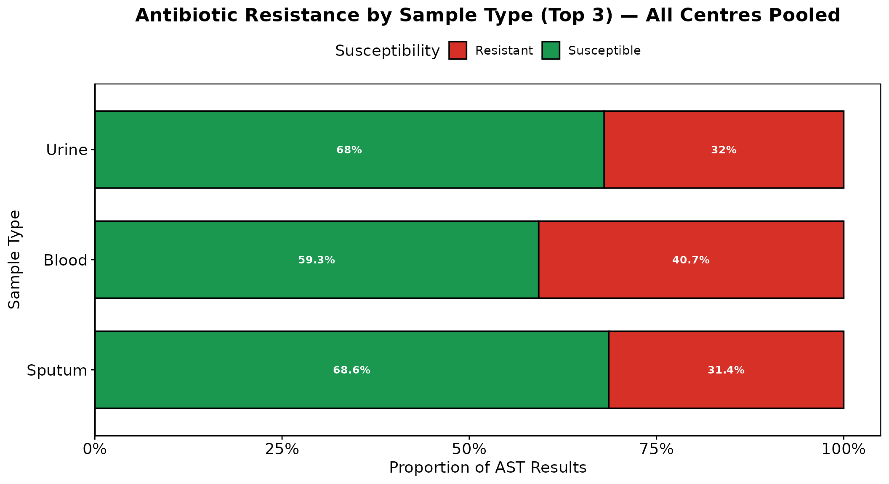
Resistance by age bin and by organism
plot_resistance_by_agebin(
eda_data, mode = "overall",
patient_col = "patient_id", organism_col = "organism_normalized",
antibiotic_col = "antibiotic_normalized", value_col = "ast_value_harmonized",
agebin_col = "Age_bin", center_col = "center_name"
)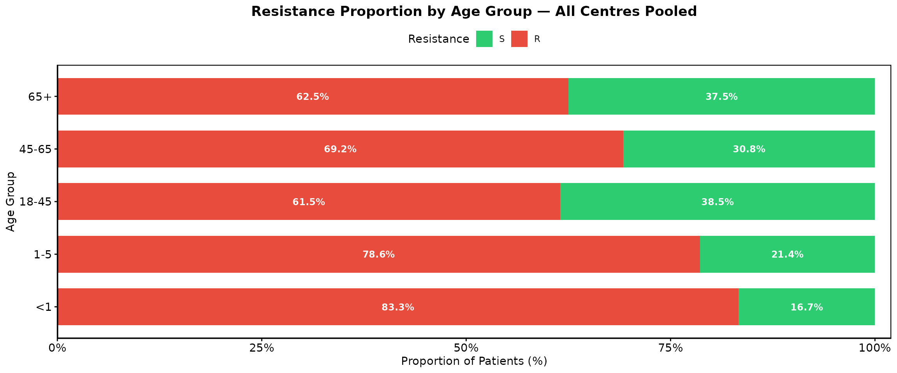
plot_resistance_by_organism(
eda_data, n = 3, mode = "overall",
patient_col = "patient_id", organism_col = "organism_normalized",
antibiotic_col = "antibiotic_normalized", value_col = "ast_value_harmonized",
center_col = "center_name"
)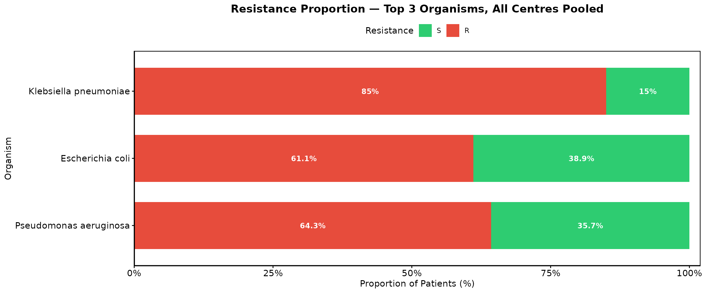
Outcomes
Overall distribution
By default merge_referred = TRUE recodes
"Transferred to other hospital" to "Referred",
since both represent the same clinical event across centres.
plot_outcome_distribution(
eda_data, mode = "overall",
patient_col = "patient_id", outcome_col = "final_outcome", center_col = "center_name"
)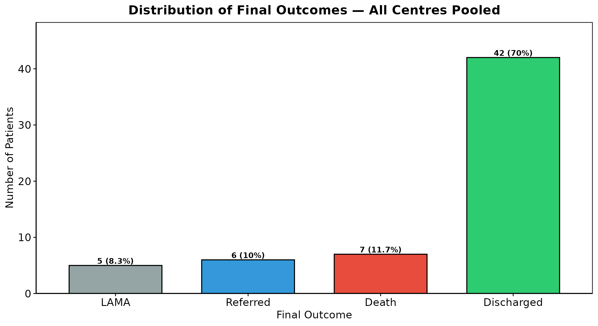
Outcome by organism, split by resistance status
resistance_filter = "R" shows patients with at least
one R result for that organism; "S" shows patients
with only S results. Because these groups overlap, calling the function
once for each gives the fuller picture.
plot_outcome_by_organism(
eda_data, n = 3, resistance_filter = "R", mode = "overall",
patient_col = "patient_id", organism_col = "organism_normalized",
antibiotic_col = "antibiotic_normalized", value_col = "ast_value_harmonized",
outcome_col = "final_outcome", center_col = "center_name"
)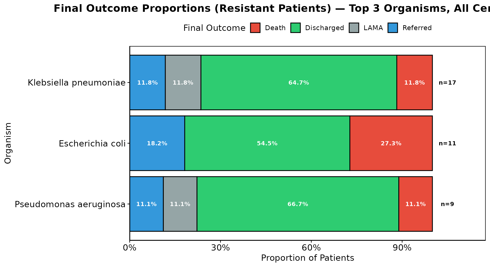
Death vs. discharged
plot_death_discharged(
eda_data, n = 3, mode = "overall",
patient_col = "patient_id", organism_col = "organism_normalized",
outcome_col = "final_outcome", center_col = "center_name",
antibiotic_col = "antibiotic_normalized", value_col = "ast_value_harmonized"
)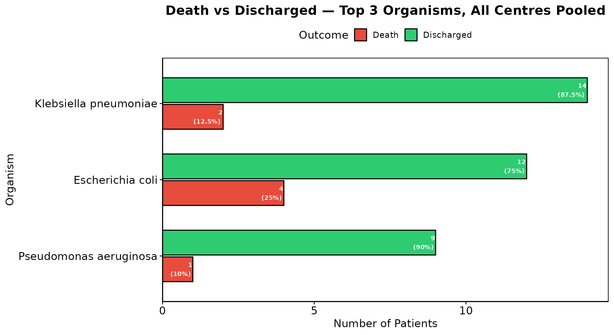
Outcome by age bin and by year
plot_outcome_by_agebin(
eda_data, mode = "overall",
patient_col = "patient_id", agebin_col = "Age_bin",
outcome_col = "final_outcome", center_col = "center_name"
)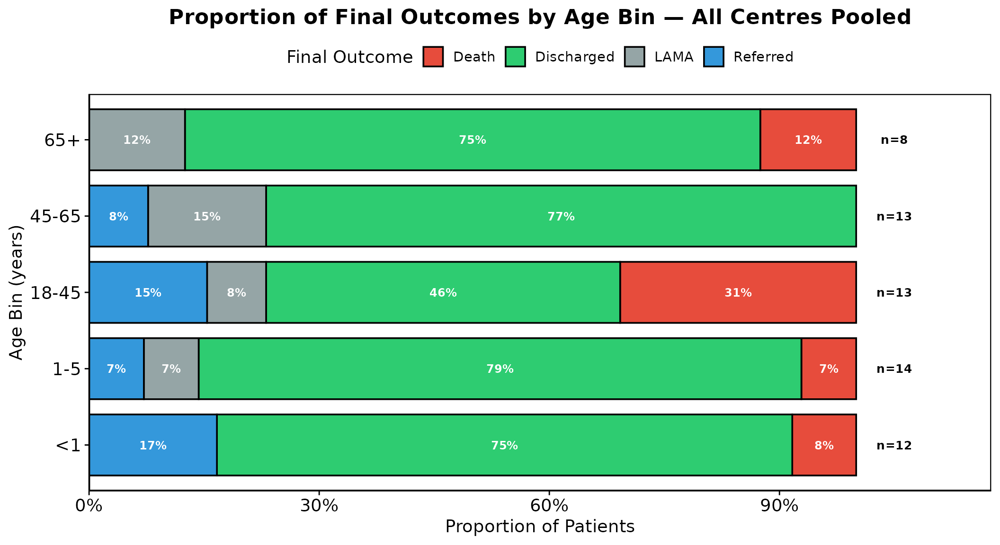
plot_outcome_by_year(
eda_data, mode = "overall",
patient_col = "patient_id", outcome_col = "final_outcome",
date_col = "date_of_final_outcome", center_col = "center_name"
)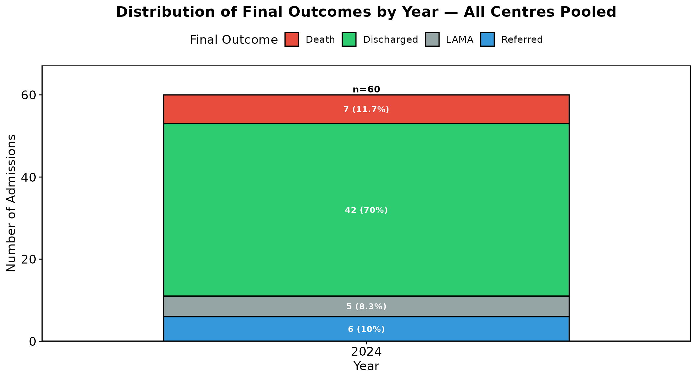
Case-Mix and Facility Patterns
Patients per hospital
plot_patients_by_hospital(eda_data, patient_col = "patient_id", center_col = "center_name")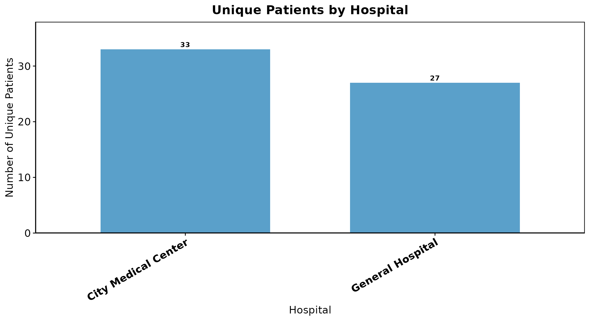
Monomicrobial vs. polymicrobial, by facility
plot_mono_poly_by_facility(
eda_data, patient_col = "patient_id", poly_col = "is_polymicrobial", center_col = "center_name"
)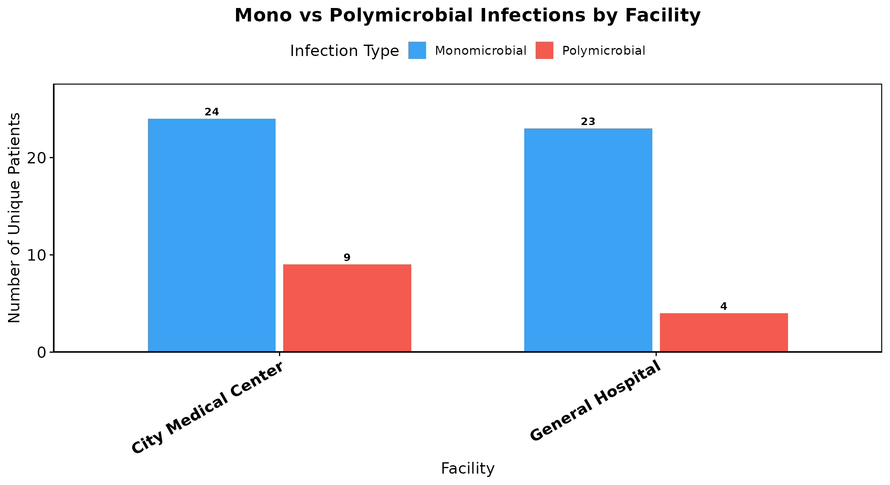
HAI vs. CAI, by facility
Computed from the gap between admission_col and
culture_col, using hai_threshold_hours
(default 48h) when an explicit infection-type column is not already
available.
plot_hai_cai_by_facility(
eda_data, patient_col = "patient_id", center_col = "center_name",
admission_col = "date_of_admission", culture_col = "date_of_culture"
)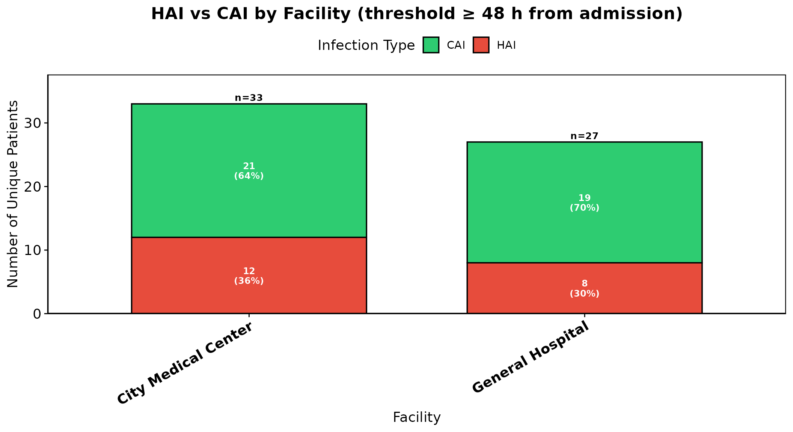
Location (ICU vs. Ward), by facility
plot_location_by_facility(
eda_data, patient_col = "patient_id", location_col = "location", center_col = "center_name"
)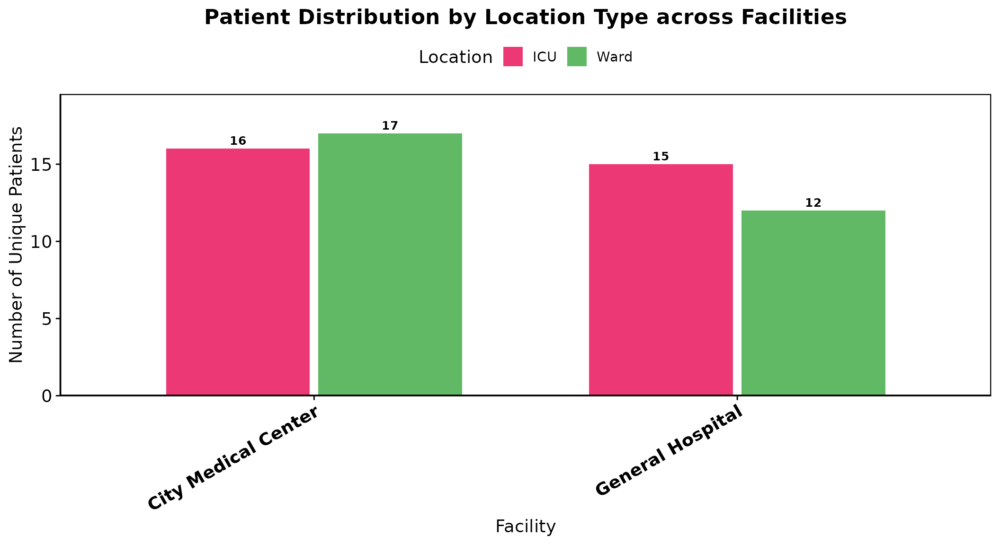
Infection type by location
plot_infection_type_by_location(
eda_data, style = "bar", patient_col = "patient_id", center_col = "center_name",
location_col = "location", infection_col = "infection_type"
)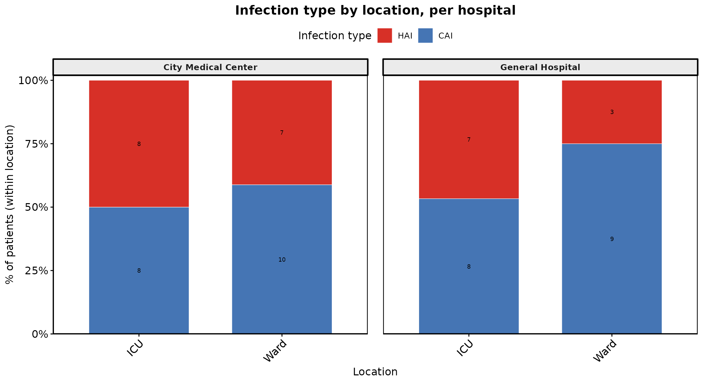
Syndrome distribution
plot_syndrome_distribution(
eda_data, mode = "overall", patient_col = "patient_id",
syndrome_col = "infectious_syndrome", center_col = "center_name"
)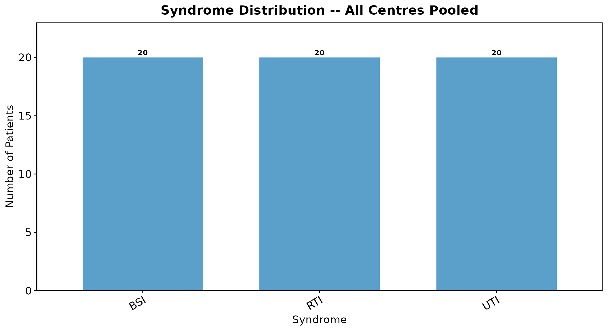
Length of Stay and Age Distributions
LOS ridge plot
plot_los_ridge(
eda_data, mode = "all", patient_col = "patient_id", center_col = "center_name",
admission_col = "date_of_admission", discharge_col = "date_of_final_outcome"
)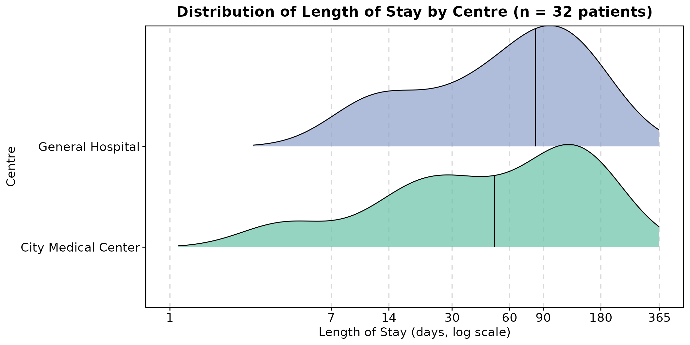
Age ridge plot
plot_age_ridge(eda_data, mode = "all", patient_col = "patient_id", age_col = "Age", center_col = "center_name")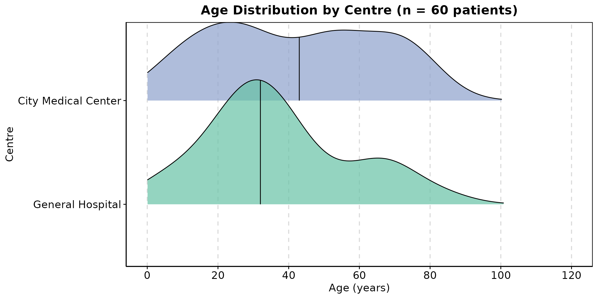
LOS by age bin
plot_los_by_agebin(
eda_data, mode = "overall", patient_col = "patient_id", agebin_col = "Age_bin",
age_col = "Age", center_col = "center_name",
admission_col = "date_of_admission", discharge_col = "date_of_final_outcome"
)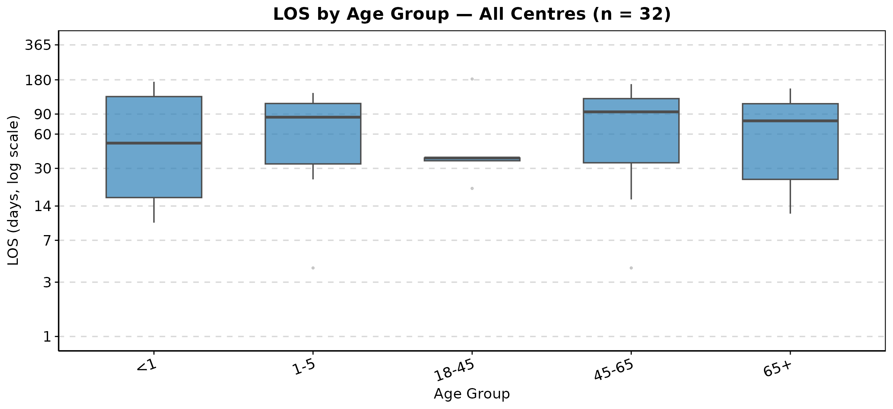
Pipeline at a Glance
Preprocessing output (prep_* pipeline, analysis-ready long-format data)
│
▼
plot_top_organisms() / plot_abx_susceptibility() / plot_abx_heatmap()
plot_resistance_by_sample() / plot_resistance_by_agebin() / plot_resistance_by_organism()
│ (organism & susceptibility overview)
▼
plot_outcome_distribution() / plot_outcome_by_organism() / plot_death_discharged()
plot_outcome_by_agebin() / plot_outcome_by_year()
│ (outcome patterns)
▼
plot_patients_by_hospital() / plot_mono_poly_by_facility() / plot_hai_cai_by_facility()
plot_location_by_facility() / plot_infection_type_by_location() / plot_syndrome_distribution()
│ (case-mix and facility patterns)
▼
plot_los_ridge() / plot_age_ridge() / plot_los_by_agebin()
│ (LOS / age distributions)
▼
Reviewed cohort -> proceed to DALY Burden Estimation (Pipeline 3)Summary
The EDA layer is meant to be run interactively, plot by plot, while
deciding whether the preprocessed cohort is ready for burden estimation
– not wrapped into a single automated entry point the way
run_preprocess() is for Pipeline 1. A typical review
pass:
- Check organism and susceptibility patterns for anything unexpected
(
plot_top_organisms(),plot_abx_heatmap()) - Check outcome distributions and case-mix balance across centres
- Check LOS/age distributions for implausible values before they reach burden estimation
- Only then move on to the DALY Burden Estimation vignette
Session Info
sessionInfo()
#> R version 4.6.1 (2026-06-24)
#> Platform: x86_64-pc-linux-gnu
#> Running under: Ubuntu 24.04.4 LTS
#>
#> Matrix products: default
#> BLAS: /usr/lib/x86_64-linux-gnu/openblas-pthread/libblas.so.3
#> LAPACK: /usr/lib/x86_64-linux-gnu/openblas-pthread/libopenblasp-r0.3.26.so; LAPACK version 3.12.0
#>
#> locale:
#> [1] LC_CTYPE=C.UTF-8 LC_NUMERIC=C LC_TIME=C.UTF-8
#> [4] LC_COLLATE=C.UTF-8 LC_MONETARY=C.UTF-8 LC_MESSAGES=C.UTF-8
#> [7] LC_PAPER=C.UTF-8 LC_NAME=C LC_ADDRESS=C
#> [10] LC_TELEPHONE=C LC_MEASUREMENT=C.UTF-8 LC_IDENTIFICATION=C
#>
#> time zone: UTC
#> tzcode source: system (glibc)
#>
#> attached base packages:
#> [1] stats graphics grDevices utils datasets methods base
#>
#> other attached packages:
#> [1] dplyr_1.2.1 anumaan_0.1.0.9024
#>
#> loaded via a namespace (and not attached):
#> [1] janeaustenr_1.0.0 tidyr_1.3.2 sass_0.4.10 generics_0.1.4
#> [5] rstatix_1.1.0 stringi_1.8.9 lattice_0.22-9 digest_0.6.39
#> [9] magrittr_2.0.5 evaluate_1.0.5 grid_4.6.1 RColorBrewer_1.1-3
#> [13] fastmap_1.2.0 jsonlite_2.0.0 Matrix_1.7-5 tidytext_0.4.3
#> [17] backports_1.5.1 Formula_1.2-6 purrr_1.2.2 scales_1.4.0
#> [21] textshaping_1.0.5 jquerylib_0.1.4 abind_1.4-8 cli_3.6.6
#> [25] rlang_1.3.0 tokenizers_0.3.0 withr_3.0.3 cachem_1.1.0
#> [29] yaml_2.3.12 otel_0.2.0 tools_4.6.1 ggsignif_0.6.4
#> [33] ggplot2_4.0.3 ggpubr_1.0.0 broom_1.0.13 vctrs_0.7.3
#> [37] R6_2.6.1 ggridges_0.5.7 lifecycle_1.0.5 car_3.1-5
#> [41] fs_2.1.0 htmlwidgets_1.6.4 ragg_1.5.2 pkgconfig_2.0.3
#> [45] desc_1.4.3 pkgdown_2.2.1 pillar_1.11.1 bslib_0.12.0
#> [49] gtable_0.3.6 glue_1.8.1 Rcpp_1.1.2 systemfonts_1.3.2
#> [53] xfun_0.60 tibble_3.3.1 tidyselect_1.2.1 knitr_1.51
#> [57] farver_2.1.2 htmltools_0.5.9 SnowballC_0.7.1 labeling_0.4.3
#> [61] carData_3.0-6 rmarkdown_2.31 compiler_4.6.1 S7_0.2.2